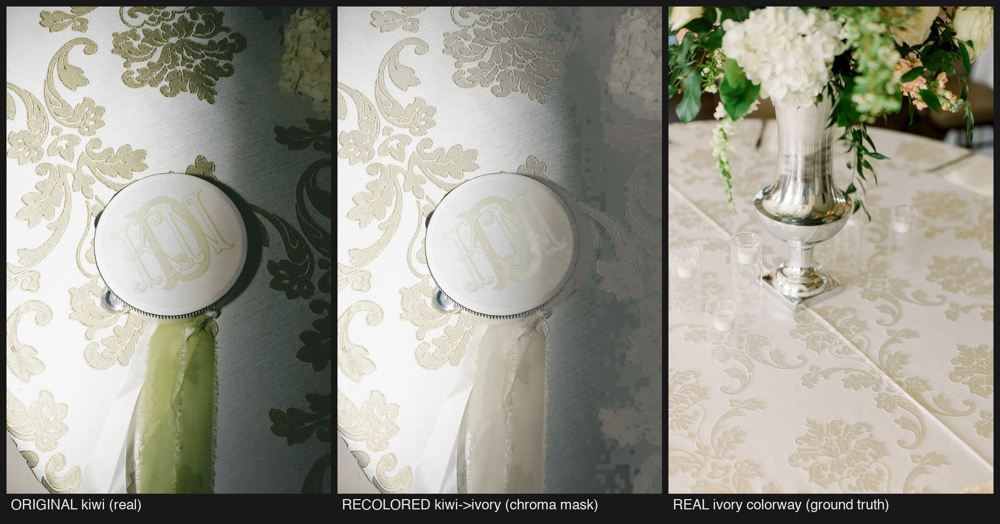
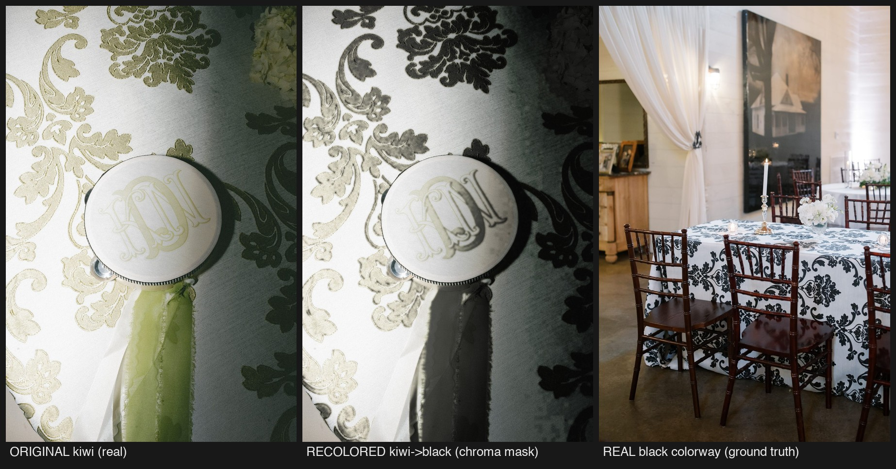

What it is
Take one real photo — say, your Madeline Damask in Kiwi on a styled table — and digitally recolor just the fabric into the other colorways. Same photo, same folds, same styling; only the linen’s color changes. Done well, it means one photographed colorway could give every color chip on the website its own in-place picture.
What we proved — on your photos
We recolored your real Kiwi close-up into ivory and black, then put each result next to the photo of the real linen in that color. Judge for yourself:


The three practical tiers
From free to full pipeline — each tier is real, and none is required.
Photograph real colorways
Today’s model · $0What you do now: shoot the colorways that get styled at real events, and the website swaps photos, not pixels. Perfect fidelity, authentic lighting. This remains the plan for most of the catalog.
Professional mask per hero photo
~$25–50 one-time per photoFor featured pieces: a retoucher hand-isolates the fabric in your best photo once. After that, every colorway of that photo is essentially free — the mask is a reusable asset. Highest quality of any approach.
Automated pipeline
Later · at scaleA real engineering project that recolors across the whole catalog with human approval on every image. Only worth building if per-color photos become a storefront-wide feature. The door stays open; nothing commits us today.
The two asks of you — today, free
Neither costs a dollar; both keep every future option open.
Shoot the most colorful version as the master
When a linen gets photographed in place, make sure the most colorful colorway is the one you shoot. A color-rich photo (Kiwi) can be recolored into ivory or black; an ivory photo can never be recolored into Kiwi — the color information just isn’t there.
Shoot in flat, even light
No harsh shadows, no direct flash on the fabric. Dramatic event lighting is beautiful, but it’s exactly what breaks recoloring — our test photo’s shadowed half is where the black version fell apart. Even light keeps the photo usable both ways.